CS184/284A Spring 2025 Homework 3 Write-Up
Link to webpage: https://cal-cs184-student.github.io/hw-webpages-pjmas/
Link to GitHub repository: https://github.com/cal-cs184-student/hw-webpages-pjmas
Overview
In this project, I implemented a path tracer capable of rendering photorealistic images by simulating realistic light behavior. Path tracing involves tracing rays from the camera through each pixel in the scene and recursively calculating the contributions of direct and indirect lighting at each intersection. To improve efficiency, I built a Bounding Volume Hierarchy (BVH) to accelerate ray-primitive intersections, reducing the computational complexity. For direct illumination, I implemented both uniform hemisphere sampling and light importance sampling, ensuring more accurate lighting calculations. Indirect illumination was handled using recursive ray tracing with Russian Roulette termination to probabilistically decide whether to continue bouncing or terminate the ray. Additionally, I implemented adaptive sampling to dynamically determine the number of samples required for each pixel, reducing noise while improving performance. The algorithm monitored the variance of the sampled illuminance and stopped sampling once it detected that the pixel had converged.Part 1: Ray Generation and Scene Intersection
Camera ray generation is a crucial step in the rendering pipeline, as it allows us to cast rays from the camera’s position through each pixel on the screen, simulating how light would travel to the camera. The direction of each ray corresponds to the pixel’s location on the image plane, effectively mapping the 3D scene to 2D image space. To generate these rays in world space, we first convert the image space coordinates (x, y) to camera space, representing the points we want to sample. After generating the ray in camera space, it is transformed into world space, where it is ready to be traced through the 3D scene. Additionally, multiple rays can be generated per pixel for techniques like anti-aliasing, which reduces visual artifacts by sampling rays that are slightly offset from the center of the pixel, ensuring smoother and more accurate image results.
Primitive intersection is essential in the ray tracing pipeline because it helps determine where a generated ray intersects with objects in the scene, which is made up of various primitives like triangles, spheres, and other shapes. Detecting these intersections is crucial for understanding the interactions between the ray and the scene, such as identifying the exact point of contact and the associated surface properties, like the surface normal or texture coordinates. This process allows the rendering system to build a more accurate representation of how rays interact with the scene, which is key to generating the final image.
The triangle intersection algorithm I implemented works by testing if a given ray intersects with a triangle in 3D space:
- Edge Vectors: The algorithm calculates the triangle’s edges by subtracting its vertices.
- Cross Product: The cross product of the ray's direction (d) and one triangle edge (e2) is computed to check if the ray is parallel to the triangle.
- Determinant Check: The determinant is calculated using the cross product and one triangle edge (e1). If it's near zero, the ray is parallel, and no intersection occurs.
- Barycentric Coordinates: The algorithm computes beta and gamma using the ray’s origin and the triangle’s edges to check if the intersection lies inside the triangle. If not, the ray misses the triangle.
- Intersection Point: The intersection distance (t) is calculated. If t is within the valid range (min_t to max_t), the intersection is valid.
- Update Intersection Data: If valid, the intersection point, normal, and material properties are stored for further processing.

|
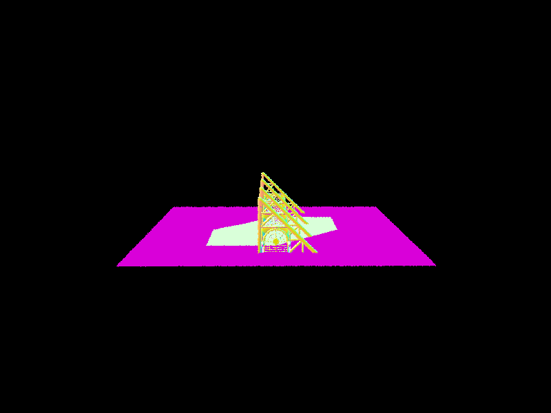
|

|

|
Part 2: Bounding Volume Hierarchy
I chose to split along the axis with the largest extent because it helps create a more balanced tree by dividing primitives where they are most spread out. For the split point, I used the midpoint of the bounding box along that axis, as it’s simple and effective. If all primitives ended up on one side (e.g., due to overlapping centroids), I forced a split by dividing them into two equal groups to avoid infinite recursion. This heuristic ensures the BVH is balanced and minimizes overlap, making ray traversal faster.
In my BVH construction algorithm, I take the following steps to build a balanced BVH tree:
- Start with Primitives: I begin with a list of primitives and compute their combined bounding box.
- Check for Leaf Node: If the number of primitives is small enough (≤ max_leaf_size), I create a leaf node, store the primitives, and stop recursion.
- Choose Split point: I calculate the extent of the bounding box along each axis (x, y, z) and pick the axis with the largest extent. This ensures the split happens where primitives are most spread out.
- Splitting the Primitives: After selecting the axis with the largest extent, I compute the midpoint of the bounding box along that axis. I use this midpoint as the split point to divide the primitives into two groups. To ensure a balanced split and avoid infinite recursion (in cases where all primitives end up on one side), I use a heuristic: if all primitives are on one side, I force the split by dividing the group into two equal parts.
- Recursive Construction: With the split point determined, I recursively build the left and right child nodes by calling the construct_bvh function on each group of primitives. This recursive process continues until all leaf nodes are small enough to hold the primitives directly.
- Returning the Node: After recursively building the left and right subtrees, I create a new BVHNode and assign the left and right child nodes to it. This node is then returned to its parent, continuing the process until the entire BVH tree is constructed.
|
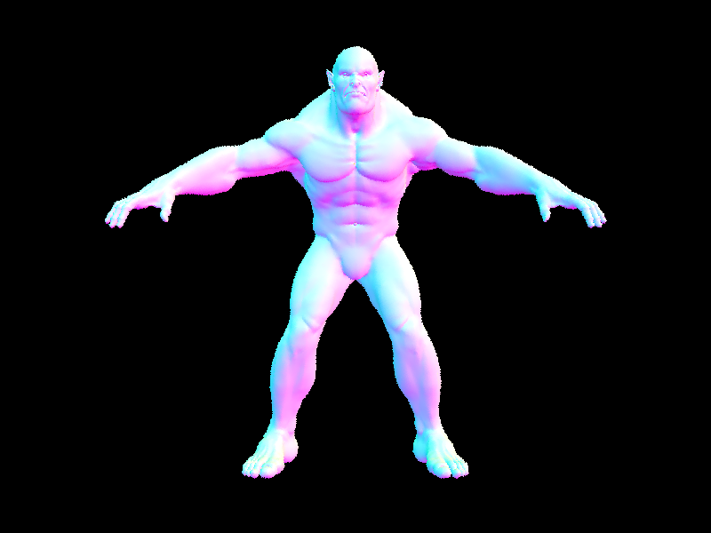
|
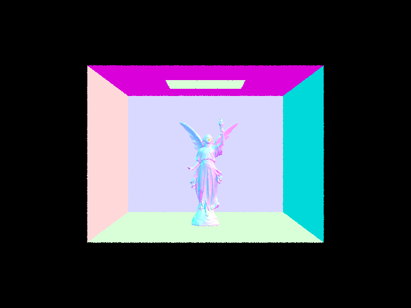
|
|
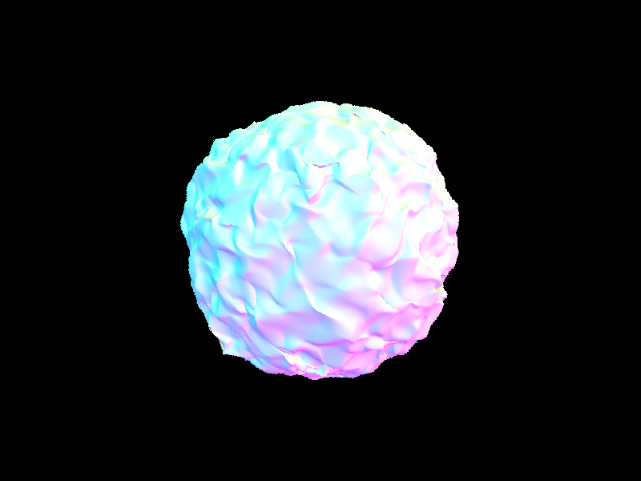
|
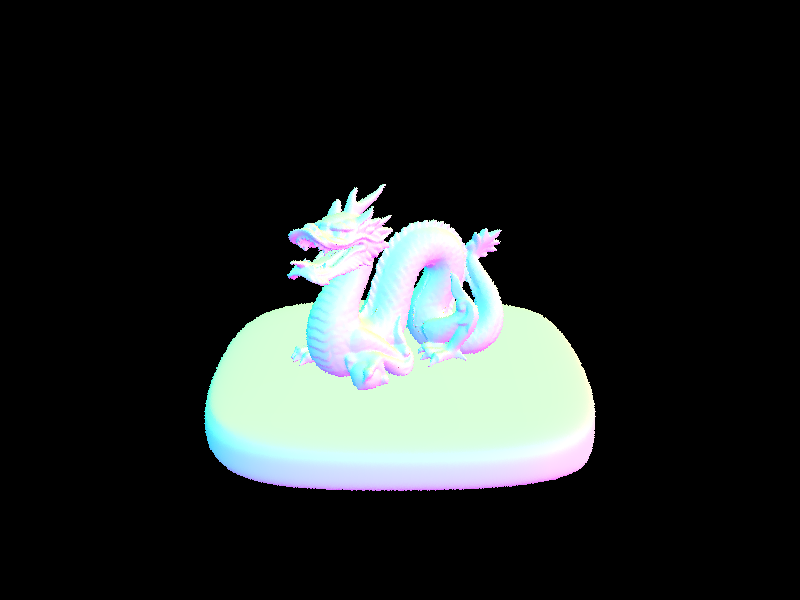
|
For beast.dae with 64,618 primitives, rendering without a BVH took 360 seconds (6 minutes), while with a BVH, it took only 0.1333 seconds. For dragon.dae with 105,120 primitives, rendering without a BVH took 585.84 seconds (9.76 minutes), but with a BVH, it completed in just 0.0659 seconds. For CBLucy.dae with 133,796 primitives, rendering without a BVH took 745.80 seconds (12.43 minutes), while with a BVH, it finished in 0.0792 seconds. These results highlight the dramatic speedup achieved by using a BVH, reducing rendering times from minutes to milliseconds for large scenes. These image was rendered on a machine with an i7-1195G7 processor and rendering using 8 threads.
Part 3: Direct Illumination
Uniform Hemisphere Sampling
To estimate direct lighting, we cast num_samples rays from the point of intersection
(hit_p) into the scene. The directions (wi) of these rays are sampled
uniformly from the hemisphere using hemisphereSampler->get_sample().
For each sampled direction, a ray is cast from hit_p to check for intersections
using bvh->intersect. If the ray hits an emissive object, we calculate the emitted
light using bsdf->get_emission(). The contribution of this light is scaled by the
BSDF value (bsdf->f) and the cosine of the angle between wi and the
surface normal at the intersection (isect.n).
All the contributions from the sampled directions are accumulated, and the final value is
normalized by dividing the sum by num_samples. This normalized result is returned
as the estimated direct lighting.
Importance Sampling Lights
From the intersection point (hit_p), we sample directions (wi)
toward each light source in the scene using light->sample_L.
For point lights (is_delta_light()), we sample only once, while
for area lights, we sample ns_area_light times.
For each sampled direction, a shadow ray is cast from hit_p toward the light source.
The ray’s minimum distance (ray.min_t) is set to EPS_F to avoid self-intersection,
and the maximum distance (ray.max_t) is set to distToLight - EPS_F
to avoid overshooting the light.
If the shadow ray does not hit any object (checked using bvh->intersect),
the emission is taken from the light using bsdf->get_emission().
This emission is then scaled by the BSDF value (bsdf->f) and the cosine of the angle
between wi and the surface normal at the intersection (isect.n).
|
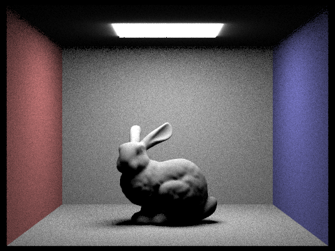
|
|
|
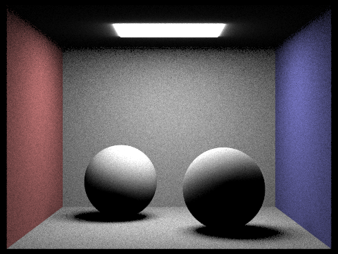
|
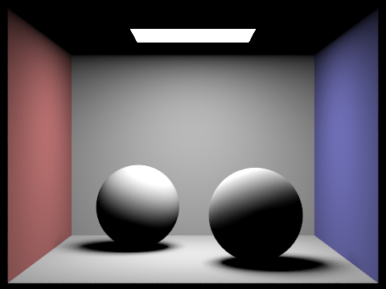
|
Noise levels in soft shadows when rendering with 1, 4, 16, and 64 light rays
|
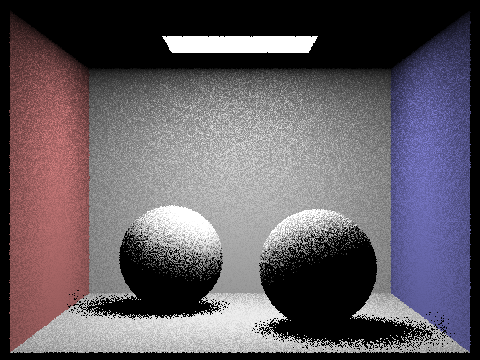
|
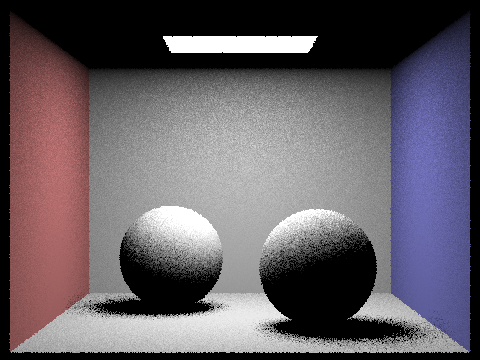
|
|
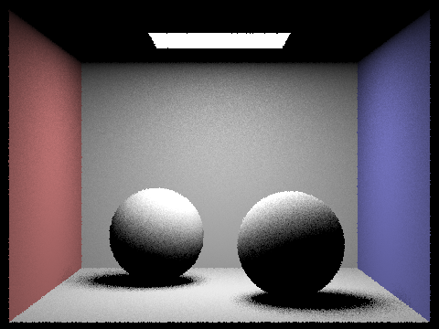
|
|
From the above pictures, it’s clear that the results of hemisphere sampling and light sampling differ significantly in terms of lighting smoothness and consistency. In the hemisphere sampling render, especially with just a single light ray, the shadows appear grainy and sharp, indicating a high level of noise. As the number of light rays increases, the shadows become smoother, but there is still noticeable speckling on surfaces like the walls. This effect occurs because hemisphere sampling distributes rays randomly, leading to inconsistent lighting levels across neighboring pixels. On the other hand, the render using light sampling, which targets light sources directly, results in much more even lighting. The lighting levels between adjacent pixels are more consistent, contributing to a smoother and more natural look overall. Additionally, the hemisphere sampling render appears darker compared to the light sampling one, as not every ray in the former reaches a light source, whereas all rays in light sampling do. The light sampling render also exhibits better overall color accuracy, as the direct lighting computation is more focused on the actual light contributions, ensuring the colors are more aligned with the scene’s light sources.
Part 4: Global Illumination
The implementation:
- The function
at_least_one_bounce_radiancecomputes radiance for a ray after at least one bounce, considering both direct and indirect lighting. - First, it transforms the ray's coordinate system from world space to object space (
o2wandw2o) using the intersection normal. - The intersection point (
hit_p) is calculated by adding the ray's origin and direction scaled by the intersection distance. - The outgoing direction (
w_out) is transformed from world space to object space. - Radiance
L_outis initialized to zero, which will accumulate indirect lighting contributions. - For rays with depth greater than 1, indirect lighting is simulated by using a coin flip (
roulette = 0.35) to decide whether to continue path tracing. - If the coin flip succeeds, the BSDF is sampled to get the next ray direction (
wi) and the corresponding probability density function (pdf). - If the PDF is positive and the BRDF value is significant, the next ray is generated and traced.
- If the next ray hits an intersection, the radiance is recursively calculated using
at_least_one_bounce_radianceand combined with the current radiance using the reflectance formula. - The function returns the accumulated radiance
L_out, which includes the indirect lighting contribution.
|
|
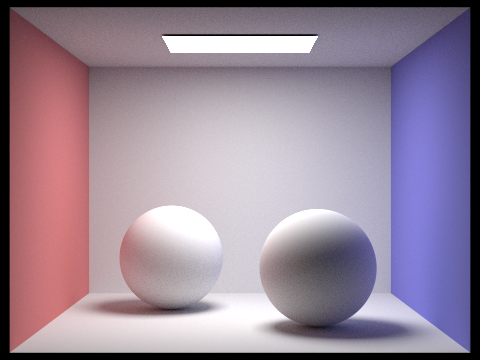
|
Direct vs Indirect illumination
|
|
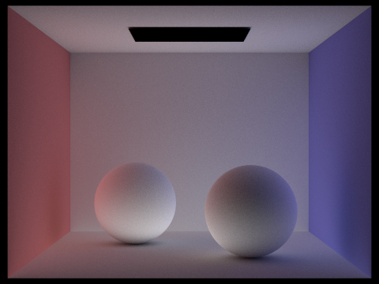
|
| isAccumBounces=false | isAccumBounces=true | |
|---|---|---|
| m=0 | 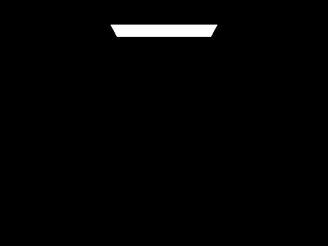 | 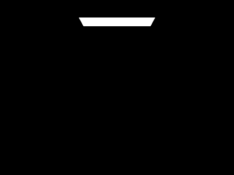 |
| m=1 | 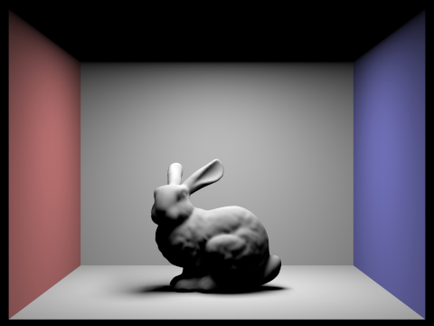 | 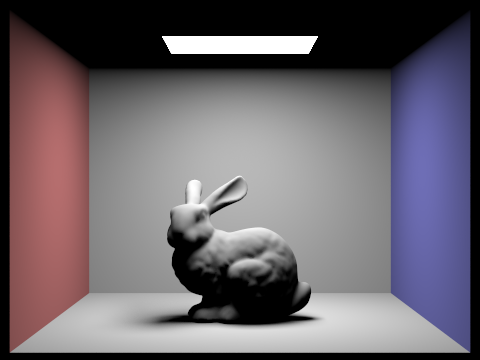 |
| m=2 | 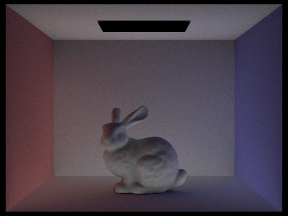 | 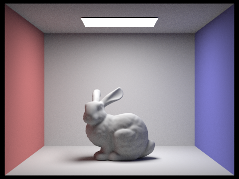 |
| m=3 | 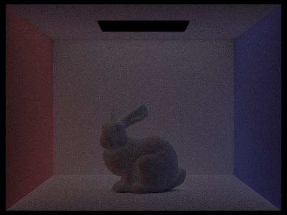 | |
| m=4 | 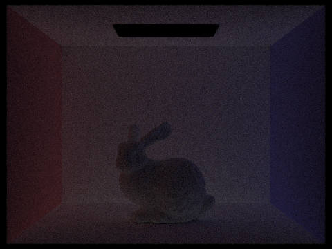 | |
| m=5 | 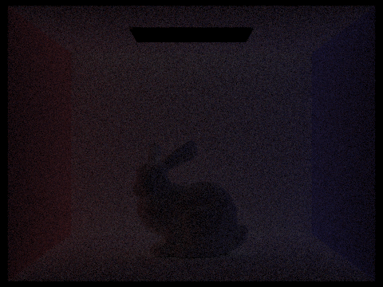 |
Explain in your write-up what you see for the 2nd and 3rd bounce of light, and how it contributes to the quality of the rendered image compared to rasterization.
In the 2nd bounce image, the underside of the bunny is illuminated because the light reflects off the floor and bounces back onto the bunny. However, the fur on the head and back remains darker since it was mainly lit during the first bounce, where the direct light hit the surface. In the 3rd bounce image, the scene becomes significantly darker, with the bunny almost entirely in shadows. This happens because the light from the 3rd bounce is scattered to other areas of the scene, contributing less to the bunny's illumination. These additional bounces allow for more accurate rendering of indirect lighting, shadows, and reflections, which rasterization typically struggles to handle. As a result, path tracing produces a more realistic and physically accurate image by simulating how light behaves in a real-world environment.
Compare rendered views of accumulated and unaccumulated bounces
As shown in the images above, each bounce adds more information to the scene by illuminating additional areas. In the first image, with max_ray_depth = 0, only the light source is visible, contributing to zero-bounce lighting. In the second image, with max_ray_depth = 1, the light bounces off the floor and illuminates the top of the bunny. With subsequent bounces, the underside of the bunny becomes more visible as the light reflects off the floor and walls. These additional bounces help to distribute the light more evenly, creating a more realistic and natural diffusion of light throughout the scene.Russian Roulette rendering
|
|
|
|
|
|
|
|
|
|
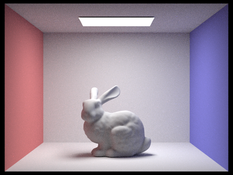
|
Samples per pixel
The images below display rendered views with varying numbers of samples per pixel (s). As shown, increasing the number of samples per pixel results in higher-quality images with significantly less noise and grain. With fewer samples, the rendered image appears grainy and lacks smoothness, while higher sample counts produce smoother and more accurate representations of the scene by better approximating the true radiance at each pixel.
|
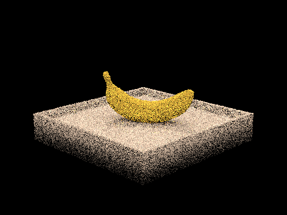
|
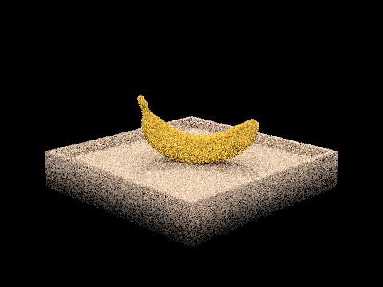
|
|
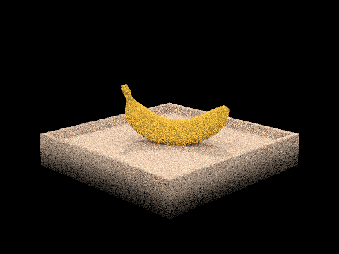
|
|
|
|
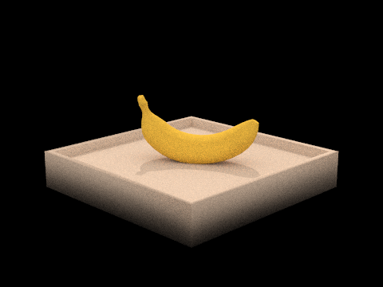
|
|
|
Part 5: Adaptive Sampling
- The function
raytrace_pixeltraces multiple rays through a pixel and averages the resulting radiance to determine the final color. - The maximum number of samples per pixel is set by
ns_aa, and adaptive sampling is used to reduce the number of samples for pixels that converge quickly. - For each sample, a random offset within the pixel is generated using
gridSampler->get_sample(), and a ray is created usingcamera->generate_ray. - The ray's radiance is computed using
est_radiance_global_illuminationand added to the accumulated radiance. - To implement adaptive sampling, the algorithm tracks the sum of illuminance values (
s1) and their squares (s2) to compute the mean (μ) and variance (σ²). - Every
samplesPerBatchsamples, the convergence criterion is checked. The confidence intervalIis calculated as1.96² * σ² / nand compared against the cutoffmaxTolerance² * μ². - If the pixel meets the convergence criterion, sampling stops early, preventing unnecessary computation.
- Once the pixel converges or reaches the maximum samples, the average radiance is stored in the
sampleBufferand the sample count is updated insampleCountBuffer.
Below scene generated with adaptive sampling with Russian Roulette probability = 0.9
| 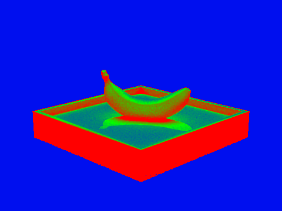 | |
| 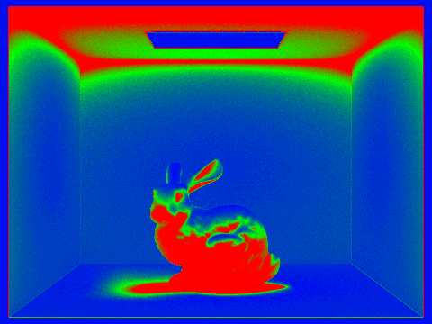 |